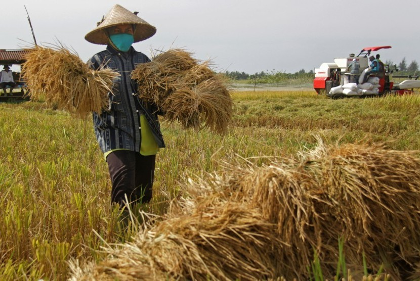

Baca selengkapnya >>>>>
Hasil Panen Jember Capai 43.124 Hektare
JEMBER - Dinas Tanaman Pangan, Hortikultura, dan Perkebunan Kabupaten Jember mencatat luas lahan pertanian yang sudah panen pada Maret dan April 2019. Diprediksi panen mencapai 43.124 hektare dengan produksi rata-rata sebesar 6,8 ton per hektare....Baca selengkapnya >>>>>

Puasa Ramadan, Pedagang Buah Blewah di Jember Raup Untung
JEMBER - Kenikmatan saat berbuka puasa, dirasakan saat menikmati takjil dengan minuman segar. Pada Bulan Ramadan tahun ini, pedagang buah garbis atau akrab disebut blewah meraup untung banyak. Pasalnya buah ini menjadi favorit masyarakat, sebagai pelepas dahaga setelah selama 12 jam menjalankan ibadah puasa.....Baca selengkapnya >>>>>
Harga Cabai Rawit di Jember Melambung, Pedagang Sebut Sudah Berlangsung 4 Hari Terakhir
JEMBER - Harga cabai rawit di Jember mencapai Rp 80 ribu per kilogram. Dari pantauan Surya, lonjakan harga cabai rawit ini terjadi sejak empat hari terakhir."Cabai sret (sebutan lokal untuk cabai rawit merah) yang harganya mahal....Baca selengkapnya >>>>>